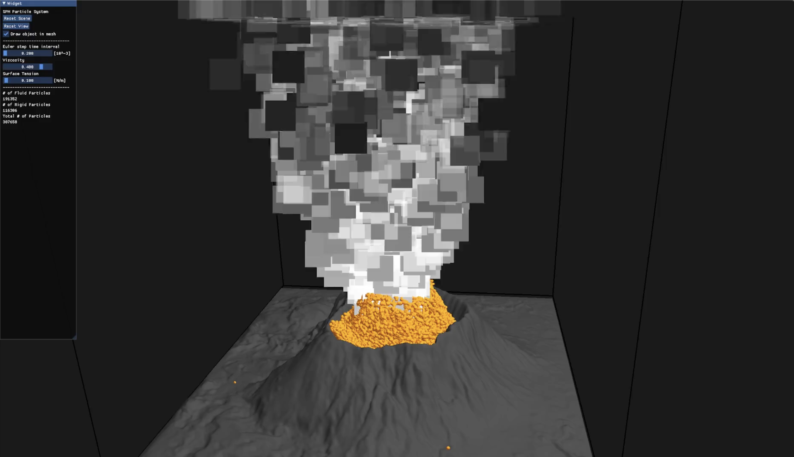

KUAN-RU (Randy) HUANGMaster of Science in Computer Science @Texas A&M University | randy103104@gmail.com |
KUAN-RU (Randy) HUANGMaster of Science in Computer Science @Texas A&M University | randy103104@gmail.com |
I am currently a Master's student in Texas A&M University studying in Computer Science under the supervision of Dr. Zhengzhong Tu in TACO Group
My main research areas are Generative AI, Computer Vision and Deep learning, especially in the field of Latent Diffusion Model.
Furthermore, I have experiences of a Research Assistant in the previous department at NUK in Data Mining and internship in Industrial Technology Research Institute. My resume can be downloaded Here
My research interests: Generative AI, Computer Vision, Deep Learning and Machine Learning.
Please feel free to contact me if you have any questions or suggestions.
Huei-Jiun Yang, Kuan-Ru Huang, Sheng-Po Wang, Ching-Chieh Lin, Chun-Lung Lin (ITRI)
ISO/IEC JTC 1/SC 29/WG 4 m65098 October 2023, Hannover
This document presents a modification related to the temporal up-sampling mothed to simplify the interpolation procedure by skipping SSIM calculation and subsequent condition selection. This proposed method shows no substantial performance change in the average BD-rate under the All-Intra, Random Access, and Low Delay test conditions.
an app recording emotion manually and automatically with a dynamic web crawler, providing periodic emotion flow reports
This app aims at providing user a easy-to-use platform to record their daily emotion. The sentiment score is developed from an algorithm removing less-emotional words and a sentiment detected model. To promote the usage, we have set a mission-and-reward mechanism to encourage users achieving daily missions, including posting on social media, chatting online and writing diaries.
An useful app for people who want to find a gym buddy. The app will match the user with the most suitable gym buddy based on the user's preference and the user's location.
A simulation of volcano eruption, which integrets fluid and rigid-body dynamics, modeling interations between lava, rocks and ash with realistic physice and visulizaion.
A adjusted real-world board game, which implements multi-threads and single-palyer process, including automatic computer logic. Player needs to defeat the other automatic ones to win the board game.

With Association map, figured out that the most popular genres among different periods by analyzing revenues and genres of movies from imdb.

A management system for sneaker store. The user could manage its data about supplies, customers and products by manipulating this website. Furthermore, users could search for certain sneakers by inputing key words.

A search engine based on TF-IDF index of the given News data. In this project, I create a matrix of TF-IDF index for each word in the data, and show the search results orderly depending on input of key words.